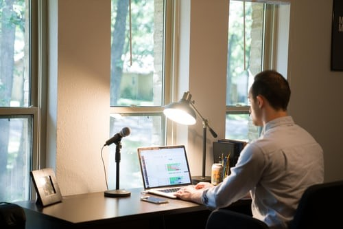

5 things to start with when working remotely

In one of the previous weeks, I wrote on a few effective ways one can adopt while working remotely for the team to stay motivated, productive and accountable in completing their tasks. This becomes highly relevant for the one who finds himself in a team-handling role. This article would focus more on the things that need to be taken care of in remote working at an individual level.
The sudden outbreak of pandemic has left many unprepared in embracing this new way of working. While remote working was offered during pre-pandemic times as well, it was only provided to a designated few largely based on the scenario they are into. Such mass adoption of remote working is unprecedented and so it is vital to discuss those aspects that could negatively affect the employees. This transition definitely brought some relief in terms of cut-down of the need to commute, however, working for longer hours under one roof without much movement and interactions has really taken its toll on employees’ work-life balance & their overall well-being.
Creating boundaries: The challenging part of work-from-home observed in the last year was an inability to achieve a clear demarcation between the work-time and the personal time, given they are living in the same environment during & post office hours. The commuting time saved has been put back into the work as additional working hours. These can induce a taxing effect and introduce burnout on their health and well-being. Employees need to be wary of this and set healthy boundaries by keeping a regular schedule. Although the daily schedule set may vary with everyone, sticking to their routine will help them lean into all their important chores required to foster work-life balance. Not to forget about introducing periodic breaks in the schedule in order to recharge themselves. Equally important is to have a dedicated workplace. A physical boundary can help them reinforce their mental one as well. Having a dedicated physical place/room for all the chores that they intend to do in a day brings a lot of clarity, which in turn can improve the chances of completing most of them and remain productive.
Being social: The informal talks and exchanges between the colleagues is never the same as it was when working in a co-located space. The spontaneous interactions and laughs with the colleagues are completely missing. They were required to build working relationships and keep loneliness at bay. Hence even while working remotely, employees need to make special efforts to connect with friends, family and colleagues. They can use all the modern–day platforms like Skype, Hangouts, Face time and other services to help them stay in touch. They should be expressing their fears and concerns to the closed ones to maintain social equanimity. As it is said, “Shared joy is a double joy; shared sorrow is half a sorrow” - sharing strengthens us all. They can even be more creative by leveraging technologies to have virtual exercise sessions, games and parties.
Flexing your muscles: Remote working has inhibited employees with a lot of physical movements, which otherwise would have happened during commuting to the office. This can have its long-term effect on their physical health. Staying active and keeping their physical fitness under check is an individual’s responsibility. Periodically moving around your home, doing a couple of regular push-ups, maintaining a healthy diet, going for a morning walk and having enough sleep can work wonders in bringing down stress-levels and increasing endorphins. During these times of crisis, it is essential to keep our immune systems strong and take enough care of ourselves. Maintaining personal hygiene can also go a long way in keeping oneself immune from any sort of potential disease one might get contracted with.
Being aware & informed: Staying abreast with the current happenings and developments in their field will help them understand where this crisis is heading towards and what could be the potential impact on the industry/sector they are involved in. It is equally important to stay informed on the general topics, especially on the progress of combatting this virus. News & Information are being continuously broadcasted and hence they are very easily available at our fingertips, however, care needs to be taken that its exposure needs to be limited to our requirement and not fall prey to any false information and negative rumors which might cause anxiety or panic. Hence it is advised to rely on trusted and authoritative sources for authentic news and information and limit other media consumption.
Making Personal space: Navigating through one’s routine to create a space for enjoying one’s hobbies and other personal activities will go a long way in combatting burnout and maintaining one’s wellbeing. Employees should also involve themselves in a lot of recreational activities like meditation, journaling, reading, yoga, listening to music, a brisk walk, etc. which needs to be done whole-heartedly with purpose. This can stand them in good stead when they are in the midst of an intensely stressful task during the day. Engaging in such activities can give them pleasure and let them distract from other day-to-day stresses. They should also reserve a dedicated time only for their loved ones and family members in order to lighten the overall atmosphere that is comprised of both professional and personal life.
Organizations can develop ways to help their remote employees in these areas by inculcating a few ideas as a part of their company’s culture. In one of Gartner’s poll, around 90% of HR leaders said that the employees would be allowed to work remotely even post roll-out of vaccines. This clearly shows that Work-From-Home (WFH) would be the new normal and hence it becomes imperative for the employees to take adequate measures to safeguard their physical, mental and emotional wellbeing and prevent stress and burnout.
Thanks for reading . Please feel free to share your comments and feedback.